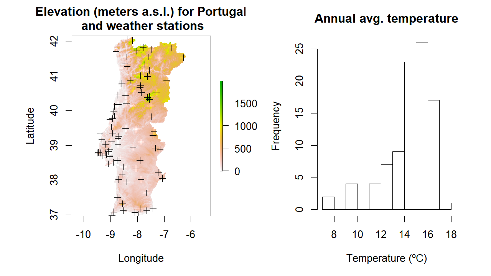
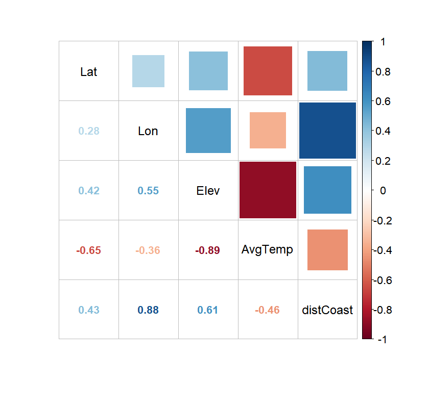
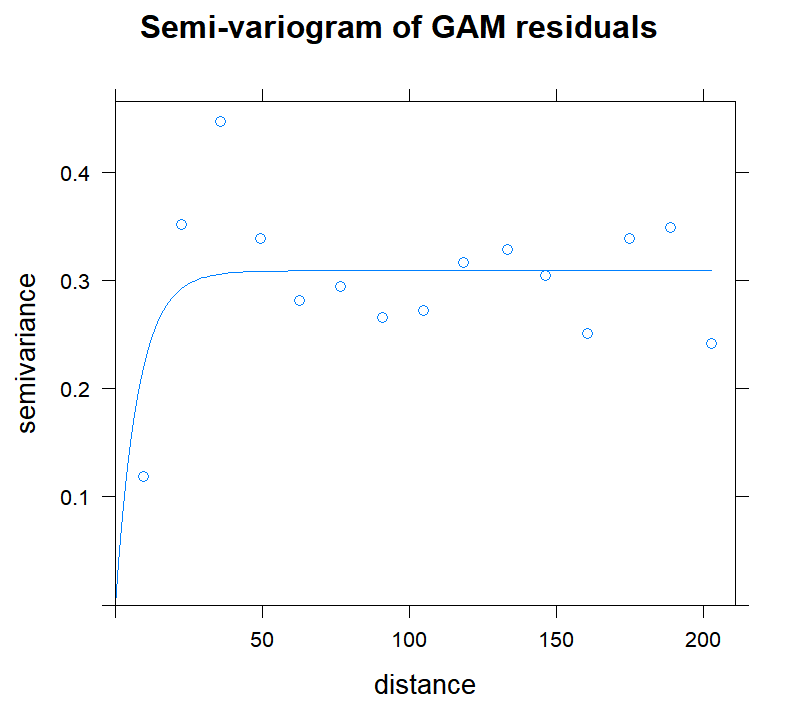

P8 Advanced techniques with raster data (part-3) - Regression Kriging
João Gonçalves
04 December 2017
Background
In this post, the ninth of the geospatial processing series with raster data, I will focus on interpolating and modelling air surface temperature data recorded at weather stations. For this purpose I will explore regression-kriging (RK), a spatial prediction technique commonly used in geostatistics that combines a regression of the dependent variable (air temperature in this case) on auxiliary/predictive variables (e.g., elevation, distance from shoreline) with kriging of the regression residuals. RK is mathematically equivalent to the interpolation method variously called universal kriging and kriging with external drift, where auxiliary predictors are used directly to solve the kriging weights.
Regression-kriging is an implementation of the best linear unbiased predictor (BLUP) for spatial data, i.e. the best linear interpolator assuming the universal model of spatial variation. Hence, RK is capable of modelling the value of a target variable at some location as a sum of a deterministic commponent
(handled by regression) and a stochastic component (kriging). In RK, both deterministic and stochastic components of spatial variation can be modeled separately. Once the deterministic part of variation has been estimated, the obtained residuals can be interpolated with kriging and added back to the estimated trend.

Scheme showing the universal model of spatial variation with three main components - by Tomislav Hengl
Regression-kriging is used in various fields, including meteorology, climatology, soil mapping, geological mapping, species distribution modeling and similar. The only requirement for using RK is that one or more covariates exist which are significantly correlated with the dependent variable.
Although powerful, RK can perform poorly if the point sample is small and non-representative of the target variable, if the relation between the target variable and predictors is non-linear (although some non-linear regression techniques can help on this aspect), or if the points do not represent feature space or represent only the central part of it.
Seven regression algorithms will be used and compared through cross-validation (10-fold CV):
- Interpolation:
- Ordinary Kriging (OK)
- Regression:
- Generalized Linear Model (GLM)
- Generalized Additive Model (GAM)
- Random Forest (RF)
- Regression-kriging:
- GLM + OK of residuals
- GAM + OK of residuals
- RF + OK of residuals
The sample data used for examples is the annual average air temperature for mainland Portugal which includes and summarizes daily records that range from 1950 to 2000. A total of 95 stations are available, unevenly dispersed throughout the country.
Four auxiliary variables were considered as candidates to model the variation of air temperature:
- Elevation (Elev in meters a.s.l.),
- Distance to the coastline (distCoast in degrees);
- Latitude (Lat in degrees), and,
- Longitude (Lon in degrees).
One raster layer per predictive variable, with a spatial resolution of 0.009 deg (ca. 1000m) in WGS 1984 Geographic Coordinate System, is available for calculating a continuous surface of temperature values.
Modelling development
Data loading and inspection
We will start by downloading and unzipping the sample data from the GitHub repository:
## Create a folder named data-raw inside the working directory to place downloaded data
if(!dir.exists("./data-raw")) dir.create("./data-raw")
## If you run into download problems try changing: method = "wget"
download.file("https://raw.githubusercontent.com/joaofgoncalves/R_exercises_raster_tutorial/master/data/CLIM_DATA_PT.zip", "./data-raw/CLIM_DATA_PT.zip", method = "auto")
## Uncompress the zip file
unzip("./data-raw/CLIM_DATA_PT.zip", exdir = "./data-raw")Now, let’s load the raster layers containing the predictive variables used to build the regression model of air temperature:
library(raster)
# GeoTIFF file list
fl <- list.files("./data-raw/climData/rst", pattern = ".tif$", full.names = TRUE)
# Create the raster stack
rst <- stack(fl)
# Change the layer names to coincide with table data
names(rst) <- c("distCoast", "Elev", "Lat", "Lon")
plot(rst)

Next step, let’s read the point data containing annual average temperature values along with location and predictive variables for each weather station:
climDataPT <- read.csv("./data-raw/ClimData/clim_data_pt.csv")
knitr::kable(head(climDataPT, n=10))| StationName | StationID | Lat | Lon | Elev | AvgTemp | distCoast |
|---|---|---|---|---|---|---|
| Sagres | 1 | 36.98 | -8.95 | 40 | 16.3 | 0.0000000 |
| Faro | 2 | 37.02 | -7.97 | 8 | 17.0 | 0.0201246 |
| Quarteira | 3 | 37.07 | -8.10 | 4 | 16.6 | 0.0090000 |
| Vila do Bispo | 4 | 37.08 | -8.88 | 115 | 16.1 | 0.0360000 |
| Praia da Rocha | 5 | 37.12 | -8.53 | 19 | 16.7 | 0.0000000 |
| Tavira | 6 | 37.12 | -7.65 | 25 | 16.9 | 0.0458912 |
| S. Brás de Alportel | 7 | 37.17 | -7.90 | 240 | 15.9 | 0.1853213 |
| Vila Real Sto. António | 8 | 37.18 | -7.42 | 7 | 17.1 | 0.0127279 |
| Monchique | 9 | 37.32 | -8.55 | 465 | 15.0 | 0.1980000 |
| Zambujeira | 10 | 37.50 | -8.75 | 106 | 15.0 | 0.0450000 |
Based on the previous data, create a SpatialPointsDataFrame object to store all points and make some preliminary plots:
proj4Str <- "+proj=longlat +ellps=WGS84 +datum=WGS84 +no_defs"
statPoints <- SpatialPointsDataFrame(coords = climDataPT[,c("Lon","Lat")],
data = climDataPT,
proj4string = CRS(proj4Str))
par(mfrow=c(1,2),mar=c(5,6,3,2))
plot(rst[["Elev"]], main="Elevation (meters a.s.l.) for Portugal\n and weather stations",
xlab = "Longitude", ylab="Latitude")
plot(statPoints, add=TRUE)
hist(climDataPT$AvgTemp, xlab= "Temperature (ºC)", main="Annual avg. temperature")

From the figure we can see that: (i) weather stations tend to cover more the areas close to the coastline and with lower altitude, and, (ii) temperature values are ‘left-skewed’ with a median equal to 15 and a median-absolute deviation (MAD) of 15.
Before proceeding, it is a good idea to inspect the correlation matrix to analyze the strength of association between the response and the predictive variables. For this, we will use the package corrplot with some nit graphical options 👍 👍
library(corrplot)
corMat <- cor(climDataPT[,3:ncol(climDataPT)])
corrplot.mixed(corMat, number.cex=0.8, tl.cex = 0.9, tl.col = "black",
outline=FALSE, mar=c(0,0,2,2), upper="square", bg=NA)

The correlation plot evidences that all predictive variables seem to be correlated with the average temperature, especially ‘Elevation’ and ‘Latitude’ which are well-known regional controls of temperature variation. It also shows that (as expected, given the country geometric shape) both ‘Longitude’ and ‘Distance to the coast’ are highly correlated. As such, given that ‘Longitude’ is less associated to temperature and its climatic effect is less “direct” (compared to ‘distCoast’) we will remove it.
Regression-kriging and model comparison
For comparing the different RK algorithms, we will use 10-fold cross validation and the Root-mean square error as the evaluation metric.

RMSE formula
Kriging parameters nugget, (partial) sill, and range will be fit through Ordinary Least Squares (OLS) from a set of previously defined values that were adjusted with the help of some visual inspection and trial-and-error. The Exponential model was selected since it gave generally best results in preliminary analyses.

Semi-variogram parameters
The functionalities in package gstat were used for all geostatistical analyses.
Now, let’s define some ancillary functions for creating the k-fold train/test data splits and for obtaining the regression residuals out of a random forest object:
# Generate the K-fold train--test splits
# x are the row indices
# Outputs a list with test (or train) indices
kfoldSplit <- function(x, k=10, train=TRUE){
x <- sample(x, size = length(x), replace = FALSE)
out <- suppressWarnings(split(x, factor(1:k)))
if(train) out <- lapply(out, FUN = function(x, len) (1:len)[-x], len=length(unlist(out)))
return(out)
}
# Regression residuals from RF object
resid.RF <- function(x) return(x$y - x$predicted)We also need to define some additional parameters and initialize the matrix that will store all RMSE values (one for each training round).
set.seed(12345)
k <- 10
kfolds <- kfoldSplit(1:nrow(climDataPT), k = 10, train = TRUE)
evalData <- matrix(NA, nrow=k, ncol=7,
dimnames = list(1:k, c("OK","RF","GLM","GAM","RF_OK","GLM_OK","GAM_OK")))Now we are ready to start modelling! 😋 One code block, inside the ‘for’ loop, will be used for each regression algorithm tested. Notice how (train) residuals are interpolated through kriging and then (test) residuals are added to (test) regression results for evaluation. Use
library(randomForest)
library(mgcv)
library(gstat)
for(i in 1:k){
cat("K-fold...",i,"of",k,"....\n")
# TRAIN indices as integer
idx <- kfolds[[i]]
# TRAIN indices as a boolean vector
idxBool <- (1:nrow(climDataPT)) %in% idx
# Observed test data for the target variable
obs.test <- climDataPT[!idxBool, "AvgTemp"]
## ----------------------------------------------------------------------------- ##
## Ordinary Kriging ----
## ----------------------------------------------------------------------------- ##
# Make variogram
formMod <- AvgTemp ~ 1
mod <- vgm(model = "Exp", psill = 3, range = 100, nugget = 0.5)
variog <- variogram(formMod, statPoints[idxBool, ])
# Variogram fitting by Ordinary Least Sqaure
variogFitOLS<-fit.variogram(variog, model = mod, fit.method = 6)
#plot(variog, variogFitOLS, main="OLS Model")
# kriging predictions
OK <- krige(formula = formMod ,
locations = statPoints[idxBool, ],
model = variogFitOLS,
newdata = statPoints[!idxBool, ],
debug.level = 0)
ok.pred.test <- OK@data$var1.pred
evalData[i,"OK"] <- sqrt(mean((ok.pred.test - obs.test)^2))
## ----------------------------------------------------------------------------- ##
## RF calibration ----
## ----------------------------------------------------------------------------- ##
RF <- randomForest(y = climDataPT[idx, "AvgTemp"],
x = climDataPT[idx, c("Lat","Elev","distCoast")],
ntree = 500,
mtry = 2)
rf.pred.test <- predict(RF, newdata = climDataPT[-idx,], type="response")
evalData[i,"RF"] <- sqrt(mean((rf.pred.test - obs.test)^2))
# Ordinary Kriging of Random Forest residuals
#
statPointsTMP <- statPoints[idxBool, ]
statPointsTMP@data <- cbind(statPointsTMP@data, residRF = resid.RF(RF))
formMod <- residRF ~ 1
mod <- vgm(model = "Exp", psill = 0.6, range = 10, nugget = 0.01)
variog <- variogram(formMod, statPointsTMP)
# Variogram fitting by Ordinary Least Sqaure
variogFitOLS<-fit.variogram(variog, model = mod, fit.method = 6)
#plot(variog, variogFitOLS, main="OLS Model")
# kriging predictions
RF.OK <- krige(formula = formMod ,
locations = statPointsTMP,
model = variogFitOLS,
newdata = statPoints[!idxBool, ],
debug.level = 0)
rf.ok.pred.test <- rf.pred.test + RF.OK@data$var1.pred
evalData[i,"RF_OK"] <- sqrt(mean((rf.ok.pred.test - obs.test)^2))
## ----------------------------------------------------------------------------- ##
## GLM calibration ----
## ----------------------------------------------------------------------------- ##
GLM <- glm(formula = AvgTemp ~ Elev + Lat + distCoast, data = climDataPT[idx, ])
glm.pred.test <- predict(GLM, newdata = climDataPT[-idx,], type="response")
evalData[i,"GLM"] <- sqrt(mean((glm.pred.test - obs.test)^2))
# Ordinary Kriging of GLM residuals
#
statPointsTMP <- statPoints[idxBool, ]
statPointsTMP@data <- cbind(statPointsTMP@data, residGLM = resid(GLM))
formMod <- residGLM ~ 1
mod <- vgm(model = "Exp", psill = 0.4, range = 10, nugget = 0.01)
variog <- variogram(formMod, statPointsTMP)
# Variogram fitting by Ordinary Least Sqaure
variogFitOLS<-fit.variogram(variog, model = mod, fit.method = 6)
#plot(variog, variogFitOLS, main="OLS Model")
# kriging predictions
GLM.OK <- krige(formula = formMod ,
locations = statPointsTMP,
model = variogFitOLS,
newdata = statPoints[!idxBool, ],
debug.level = 0)
glm.ok.pred.test <- glm.pred.test + GLM.OK@data$var1.pred
evalData[i,"GLM_OK"] <- sqrt(mean((glm.ok.pred.test - obs.test)^2))
## ----------------------------------------------------------------------------- ##
## GAM calibration ----
## ----------------------------------------------------------------------------- ##
GAM <- gam(formula = AvgTemp ~ s(Elev) + s(Lat) + s(distCoast), data = climDataPT[idx, ])
gam.pred.test <- predict(GAM, newdata = climDataPT[-idx,], type="response")
evalData[i,"GAM"] <- sqrt(mean((gam.pred.test - obs.test)^2))
# Ordinary Kriging of GAM residuals
#
statPointsTMP <- statPoints[idxBool, ]
statPointsTMP@data <- cbind(statPointsTMP@data, residGAM = resid(GAM))
formMod <- residGAM ~ 1
mod <- vgm(model = "Exp", psill = 0.3, range = 10, nugget = 0.01)
variog <- variogram(formMod, statPointsTMP)
# Variogram fitting by Ordinary Least Sqaure
variogFitOLS<-fit.variogram(variog, model = mod, fit.method = 6)
#plot(variog, variogFitOLS, main="OLS Model")
# kriging predictions
GAM.OK <- krige(formula = formMod ,
locations = statPointsTMP,
model = variogFitOLS,
newdata = statPoints[!idxBool, ],
debug.level = 0)
gam.ok.pred.test <- gam.pred.test + GAM.OK@data$var1.pred
evalData[i,"GAM_OK"] <- sqrt(mean((gam.ok.pred.test - obs.test)^2))
}## K-fold... 1 of 10 ....
## K-fold... 2 of 10 ....
## K-fold... 3 of 10 ....
## K-fold... 4 of 10 ....
## K-fold... 5 of 10 ....
## K-fold... 6 of 10 ....
## K-fold... 7 of 10 ....
## K-fold... 8 of 10 ....
## K-fold... 9 of 10 ....
## K-fold... 10 of 10 ....Let’s check the average and st.-dev. results for the 10-folds CV:
round(apply(evalData,2,FUN = function(x,...) c(mean(x,...),sd(x,...))),3)## OK RF GLM GAM RF_OK GLM_OK GAM_OK
## [1,] 1.193 0.678 0.598 0.569 0.613 0.551 0.521
## [2,] 0.382 0.126 0.195 0.186 0.133 0.179 0.163From the results above we can see that RK performed generally better than
the regression techniques alone or tahn Ordinary Kriging. The GAM-based RK method obtained the best scores with a RMSE of ca. 0.521. These are pretty good results!! 😋 👍 👍
To finalize, we will predict the temperature values for the entire surface of mainland Portugal based on GAM-based Regression Kriging, which was the best performing technique on the test. For this we will not use any test/train partition but the entire dataset:
GAM <- gam(formula = AvgTemp ~ s(Elev) + s(Lat) + s(distCoast), data = climDataPT)
rstPredGAM <- predict(rst, GAM, type="response")Next we need to obtain a surface with kriging-interpolated residuals. For that, we have to convert the input RasterStack or RasterLayer into a SpatialPixelsDataFrame so that the krige function can use it as a reference:
rstPixDF <- as(rst[[1]], "SpatialPixelsDataFrame")Like before, we will interpolate the regression residuals with kriging and add them back to the regression results.
# Create a temporary SpatialPointsDF object to store GAM residuals
statPointsTMP <- statPoints
crs(statPointsTMP) <- crs(rstPixDF)
statPointsTMP@data <- cbind(statPointsTMP@data, residGAM = resid(GAM))
# Define the kriging parameters and fit the variogram using OLS
formMod <- residGAM ~ 1
mod <- vgm(model = "Exp", psill = 0.15, range = 10, nugget = 0.01)
variog <- variogram(formMod, statPointsTMP)
variogFitOLS <- fit.variogram(variog, model = mod, fit.method = 6)
# Plot the results
plot(variog, variogFitOLS, main="Semi-variogram of GAM residuals")

The exponential semi-variogram looks reasonable although some lack-of-convergence problems… 😟 😔
Finally, let’s check the average temperature map obtained from GAM RK:
residKrigMap <- krige(formula = formMod ,
locations = statPointsTMP,
model = variogFitOLS,
newdata = rstPixDF)## [using ordinary kriging]residKrigRstLayer <- as(residKrigMap, "RasterLayer")
gamKrigMap <- rstPredGAM + residKrigRstLayer
plot(gamKrigMap, main="Annual average air temperature\n(GAM regression-kriging)",
xlab="Longitude", ylab="Latitude", cex.main=0.8, cex.axis=0.7, cex=0.8)

This concludes our exploration of the raster package and regression kriging for this post. Hope you find it useful! 😄 👍 👍